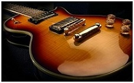
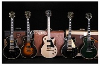

LES PAUL
МЕНЮ
LES PAUL
Описание
Создавая совершенный дизайн и отличный звук les Paul превратились в шедевр. Прежде всего привлекает красивый вид – не мало важный аспект. Если в fender имеется чаще всего два цвета, то в les Paul получается более яркая и красивая раскраска. Любоваться этой гитарой можно бесконечно. Звук очень точный и безукоризненно подходит для переборов. Но «дистрошн» звучит не так «жирно» как на Cort, Fender. Здесь он более жидкий. Однако всё же усилителями можно добиться и этого. Гитара не фонит и ничего не шипит на заднем плане, что несомненно радует слушателя. Корпус легок и очень удобен. Но при этом переключатель звука находится над рукой. Причем достаточно далеко. Это немного мешает но так как эта гитара для перебора можно без проблем успевать переключать режим во время партий других инструментов(в группе).
В целом:
Качество сборки–4++
Качество звука–4/5(бой/перебор)
Удобность корпуса–4
Держание строя–5
Вес–5-Общая оценка